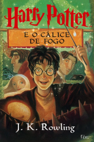
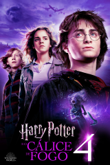

Livro 2
Harry Potter e o Cálice de Fogo
Resumo
De volta aos Dursley, Harry Potter, em um sonho, assiste Lorde Voldemort matar Frank Bryce, e acorda com sua cicatriz doendo. Os Weasleys então resgatam Harry e Hermione Granger de suas casas e os levam para a Copa do Mundo de Quadribol usando uma Chave de Portal para assistir a partida de Irlanda contra Bulgária. Lá, Harry conhece Cedrico Diggory, que está no jogo com seu pai. Depois da partida, os seguidores de Voldemort — nomeados Comensais da Morte — atacam o local, causando estragos e mortes. Eles conjuram a Marca Negra no céu, o que gera pânico em todos, pois é a primeira vez que é vista em treze anos. Após Harry perder sua varinha durante o caos do ataque, Winky, a elfa doméstica de Bartolomeu Crouch, é falsamente acusada de ter lançado a marca após ser vista segurando o objeto, que é revelado ter sido usado para lançá-la. Hermione, inconformada com a injustiça, forma um fundo de apoio com o intuito de promover os direitos dos elfos domésticos.
Em Hogwarts, o professor Dumbledore anuncia que Alastor "Olho-Tonto" Moody será o novo professor de Defesa Contra as Artes das Trevas do ano, e que Hogwarts irá realizar o Torneio Tribruxo, dando um prêmio de mil galeões ao vencedor.De volta aos Dursley, Harry Potter, em um sonho, assiste Lorde Voldemort matar Frank Bryce, e acorda com sua cicatriz doendo. Os Weasleys então resgatam Harry e Hermione Granger de suas casas e os levam para a Copa do Mundo de Quadribol usando uma Chave de Portal para assistir a partida de Irlanda contra Bulgária. Lá, Harry conhece Cedrico Diggory, que está no jogo com seu pai. Depois da partida, os seguidores de Voldemort — nomeados Comensais da Morte — atacam o local, causando estragos e mortes. Eles conjuram a Marca Negra no céu, o que gera pânico em todos, pois é a primeira vez que é vista em treze anos. Após Harry perder sua varinha durante o caos do ataque, Winky, a elfa doméstica de Bartolomeu Crouch, é falsamente acusada de ter lançado a marca após ser vista segurando o objeto, que é revelado ter sido usado para lançá-la. Hermione, inconformada com a injustiça, forma um fundo de apoio com o intuito de promover os direitos dos elfos domésticos.
Em Hogwarts, o professor Dumbledore anuncia que Alastor "Olho-Tonto" Moody será o novo professor de Defesa Contra as Artes das Trevas do ano, e que Hogwarts irá realizar o Torneio Tribruxo, dando um prêmio de mil galeões ao vencedor.
Poster do Filme
Trailer
Curiosidades
- O torneio Tribruxo, que é uma parte importante da trama deste livro, foi inspirado em uma tradição escocesa chamada Highland Games, onde os competidores participam de uma série de eventos físicos e mentais. Rowling disse que também se inspirou nos Jogos Olímpicos para criar o torneio.
- O nome "Cedrico Diggory", um personagem que é introduzido neste livro, foi inspirado em um aluno que J.K. Rowling conheceu quando era professora em Portugal. Ela disse que o nome "soava como um herói" e decidiu usá-lo na história.
- Este livro contém a morte mais chocante da série: a morte de Cedrico Diggory. Rowling disse que queria mostrar aos leitores que a série não era apenas uma fantasia alegre, mas também poderia ser sombria e realista. A morte de Cedrico também é um ponto crucial na trama da série, pois é o evento que finalmente traz Voldemort de volta à plena força.